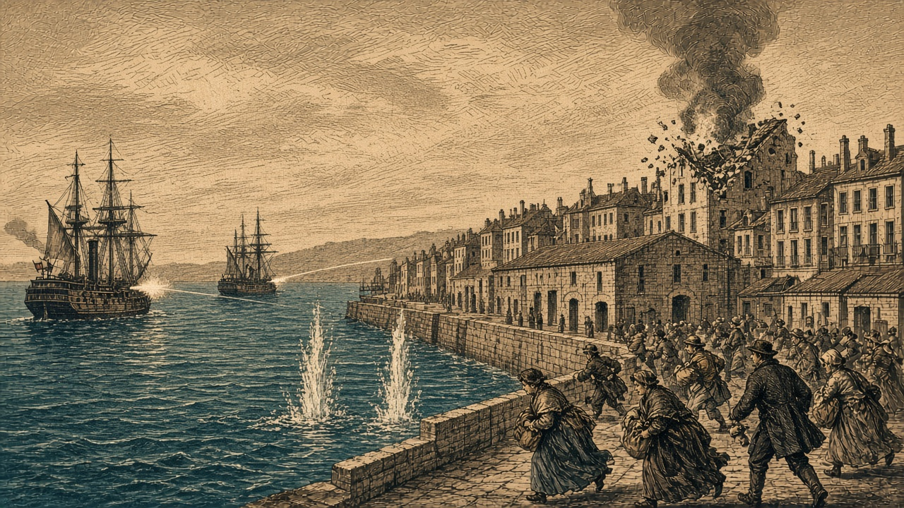

カペレナ艦隊、黒潮の二都市を砲撃
フィルノア・ネルヴェナで市民600人犠牲
陸上の戦果は7,600人対1,900人 首都は黒潮が保持

【総合部】カペレナ王国の戦艦と巡洋艦が、黒潮自治国の現代都市フィルノア（19,18）とネルヴェナ（20,17）を艦砲で撃った。フィルノアで400人、ネルヴェナで200人、合わせて600人が死亡した。二つの都市も、黒潮の首都も、領有は黒潮のままである。
陸上ではカペレナ軍が黒潮軍に7,600人の損害を与えた。黒潮軍がカペレナ軍に与えた損害は1,900人。これまでの戦果はカペレナ軍143,800人、黒潮軍94,300人となった。
王国側は「黒潮臨時首都の防衛軍壊滅、北部既に8割制圧、抵抗軍は計画都市に疎開か」との声明を出した。ただし、黒潮の首都の領有は変わっていない。陸上での大きな損害と市街地への艦砲射撃は、別々に起きた事態である。砲撃地点と両軍の交戦は2面で詳報する。
なのです、残党の兵站を占領
なのです主義人民共和国は、旧シンジケート連邦政府残党の兵站基地を占領し、予備兵1,000人を奪った。今期、なのです軍が残党軍に与えた損害は4,000人、残党がなのですに与えた損害は600人。残党の首都プライムは、同勢力が保持している。詳報は3面。
各国の火災で28,800人犠牲
火災では、なのですの都市と町で18,600人、チェス＝シロバキア共和国の都市で10,200人、合わせて28,800人が死亡した。白波王国から翠湖自治州へは、仕事を求める3,000人が着いた。詳報は4面。
青海がオリョルッルに宣戦
青海共和国はオリョルッル王国に宣戦を布告した。開戦は第136期である。今期、両軍はまだ交戦していない。王国は緑丘公国とも第135期に開戦する予定で、二つの戦争を相次いで迎える。青海は今期、造船も進めた。